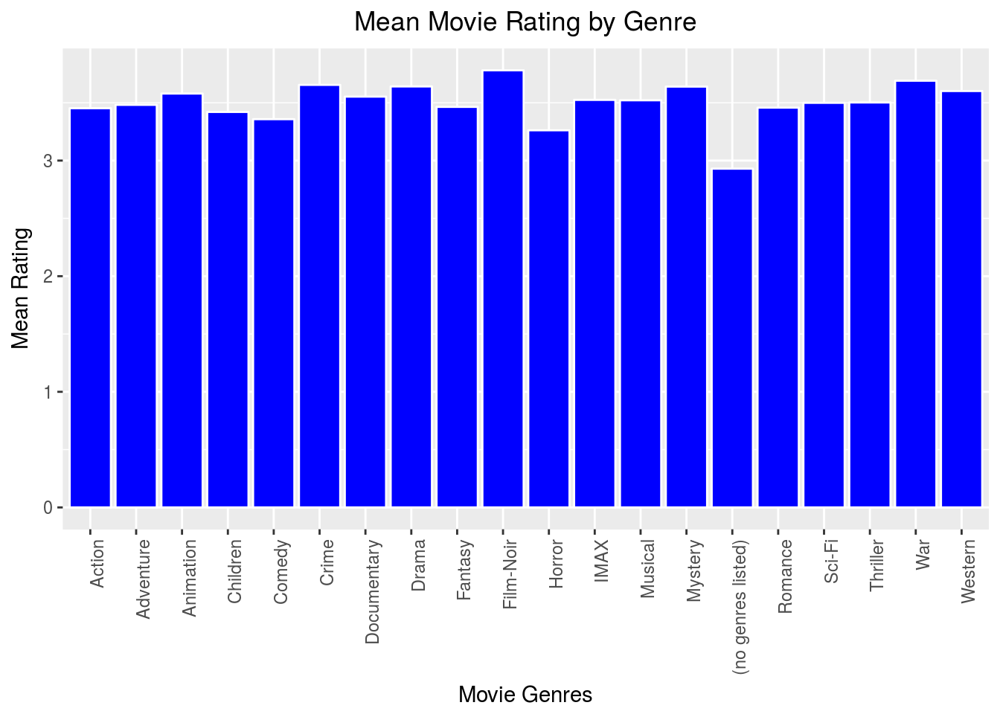

Lesson: 4 Introduction to Control Structures
This lesson will cover the if() statement as well as the for() loop and while() loop. These are three very common control structures for all computer programming languages and are used extensively in the R programming language.
4.1 if() Statements
The if() statement allows us to automate decision points and guide the computer through a data flow diagram. The basic syntax is given below:
if(<condition>) {
# do something
} else if(<another condition>){
# do something else
} else {
# do something completely different
}Let’s see this in practice:
- Case 1
my.number = 1
if(!is.numeric(my.number)) {
print("You were supposed to store a number in 'my.number'.")
} else if(my.number >= 10){
print("My number is greater than or equal to 10.")
} else {
print("My number is less than 10.")
}## [1] "My number is less than 10."- Case 2
my.number = 100
if(!is.numeric(my.number)) {
print("You were supposed to store a number in 'my.number'.")
} else if(my.number >= 10){
print("My number is greater than or equal to 10.")
} else {
print("My number is less than 10.")
}## [1] "My number is greater than or equal to 10."- Case 3
my.number = "huge"
if(!is.numeric(my.number)) {
print("You were supposed to store a number in 'my.number'.")
} else if(my.number >= 10){
print("My number is greater than or equal to 10.")
} else {
print("My number is less than 10.")
}## [1] "You were supposed to store a number in 'my.number'."The else clause(s) can grow rather lengthy if many special cases must be handled uniquely, but it is quite often the case that we just need an if() statement. Think of this statement as a gate you must pass in order to run a chunk of code.
if(<condition>) {
## do something
}An example you might use in practice is boundary checking. Suppose you have age data, and you want to be notified if there is a negative age recorded.
my.age <- 1
if(my.age < 0) {
print("Negative age detected. Check for data entry error.")
}We didn’t see our notification because we didn’t pass the if() gate that reaches the print() command. We skipped right over it.
my.age <- -1
if(my.age < 0) {
print("Negative age detected. Check for data entry error.")
}## [1] "Negative age detected. Check for data entry error."Now we get the message because we passed the if() condition.
The if() statement is most often used in loops and functions. We’ll illustrate the use of the if() statement in loops below.
4.2 Loops
Loops provide a way to systematically walk down a data structure (usually a vector, data frame, or list) and potentially accomplish a task many times along the way. The for() loop and the while() loop will be the primary loops used in this class. The for() loop is used when we know ahead of time a finite number of iterations that we need to execute. For example, we might execute a task for every object in a vector/list or every row in a data frame.
The for() loop below iterates over the values 1, 2, 3, 4, and 5 and prints each of the values.
for(i in 1:5){
print(i)
}## [1] 1
## [1] 2
## [1] 3
## [1] 4
## [1] 5Notice that we can also use i to access a value in a vector, a row in a data frame, or an object in a list.
letters <- c("a", "b", "c", "d", "e")
for(i in 1:5){
print(letters[i])
}## [1] "a"
## [1] "b"
## [1] "c"
## [1] "d"
## [1] "e"You also don’t have to start with 1 or use the letter i:
for (year in 2010:2015){
print(paste("The year is", year))
}## [1] "The year is 2010"
## [1] "The year is 2011"
## [1] "The year is 2012"
## [1] "The year is 2013"
## [1] "The year is 2014"
## [1] "The year is 2015"The next command is often used to skip an iteration if a certain condition is met. The code below illustrates how to use next:
for(i in 1:5){
if(letters[i]=="c"){
next
}
print(letters[i])
}## [1] "a"
## [1] "b"
## [1] "d"
## [1] "e"Loops can also be nested inside of each other. This is useful when working with multiple dimensions (like matrices) or lists of lists. For example, the outer for() loop iterates over countries, and the inner for() loop iterates over each city in a given country. An example of a nested for() loop is given below, creating a multiplication table:
# nested for: multiplication table
# create a 10 x 10 matrix (10 rows and 10 columns)
mymat = matrix(nrow=10, ncol=10)
for(i in 1:nrow(mymat)) { # for each row
for(j in 1:ncol(mymat)){ # for each column
# assign values based on position: product of two indices
mymat[i,j] = i*j
}
}
mymat## [,1] [,2] [,3] [,4] [,5] [,6] [,7] [,8] [,9] [,10]
## [1,] 1 2 3 4 5 6 7 8 9 10
## [2,] 2 4 6 8 10 12 14 16 18 20
## [3,] 3 6 9 12 15 18 21 24 27 30
## [4,] 4 8 12 16 20 24 28 32 36 40
## [5,] 5 10 15 20 25 30 35 40 45 50
## [6,] 6 12 18 24 30 36 42 48 54 60
## [7,] 7 14 21 28 35 42 49 56 63 70
## [8,] 8 16 24 32 40 48 56 64 72 80
## [9,] 9 18 27 36 45 54 63 72 81 90
## [10,] 10 20 30 40 50 60 70 80 90 100The while() loop is used when we don’t know how many iterations we need to go through, but we know the condition that needs to be met before we are done.
i <- 5
while(i <= 25) {
print(i)
# Here we set a new value of i.
i <- i + 5
# Now we go back and check the while() condition.
}## [1] 5
## [1] 10
## [1] 15
## [1] 20
## [1] 25To finish out this lesson, we’ll provide an example of some more sophisticated code. This function simulates a round of play in the board game RISK. In the board game RISK, an attacker begins an assault against a defender, and the win/loss is adjudicated as both players begin rolling dice and comparing values. The simulation below plays through this entire series, declares whether the attacker or the defender won, and declares the number of armies left on the board for each player. Instead of doing this once, this code plays through this 10,000 times, and in the process calculates the probability of the attacker winning. This type of process is known as Monte Carlo Simulation. While you may not fully understand all aspects of this code, note throughout this function how important loops and if() statements are:
# Our function will take as inputs the number of armies the
# attacker has, the number of armies the defender has, and
# the desired number of simulated trials the user wants.
risk <- function(attacker, defender, n) {
# Create an empty vector to hold the simulated win/loss outcomes.
results <- rep(NA, n)
# Create restoration values to reset the armies after each trial.
attacker.reset <- attacker
defender.reset <- defender
# For n total trials...
for(j in 1:n){
# Reset the attacker and defender for a new trial.
attacker <- attacker.reset
defender <- defender.reset
# ...as long as the attacker has more than one army
# and the defender has an army...
while(attacker > 1 & defender > 0) {
# Both players pick up the right number of dice...
atk.dice <- min(attacker-1, 3)
def.dice <- min(defender, 2)
# Both players roll the right number of dice...
atk.roll <- ceiling(runif(atk.dice)*6)
def.roll <- ceiling(runif(def.dice)*6)
# Each player's dice are sorted from greatest to least...
atk.roll <- atk.roll[order(atk.roll,decreasing=T)]
def.roll <- def.roll[order(def.roll,decreasing=T)]
# Compare the correct numbers of dice for each player...
comparison <- min(atk.dice, def.dice)
for (i in 1:comparison) {
if (atk.roll[i] > def.roll[i]){
# The attacker won, so the defender loses an army...
defender <- defender-1
}
if (atk.roll[i] <= def.roll[i]){
# The defender won, so the attacker loses an army...
attacker <- attacker-1
}
# Keep going up to the number of required comparisons.
}
# Keep going until the attacker or defender is wiped out.
}
# If the defender ran out of armies, the attacker wins.
if (defender==0) results[j] <- "Attacker"
# If the defender did not run out of armies, the defender wins.
if (defender>0) results[j] <- "Defender"
# Keep going up to the number of required trials.
}
print(paste("The Probability of the Attacker winning is:",
length(results[results=="Attacker"])/n))
}The statement below illustrates how to use the risk() function:
risk(attacker=4,defender=3,n=1000)## [1] "The Probability of the Attacker winning is: 0.476"4.3 Practice Problem
Use the instructions below to determine and visualize the average movie rating by genre.
- Read the movie ratings data you downloaded in Section 1.6 into R.
- Use the code below to build a vector called
genresthat contains all unique genre names contained in the data set.
library(stringr)
rating <- read.csv("rating2.csv", as.is = TRUE)
genre.list <- unique(unlist(str_split(rating$genres,"\\|")))Try to execute the following steps before looking at the code solution that shows just one way to accomplish this task.
- Create a vector object that is the same length as
genre.listto contain themeanratings. - Iterate over your original data set in a
for()loop, use thegrep()command to extract the subset that is related to a specific genre, and calculate the mean rating for that genre. - Create a barplot visualization of average ratings by genre.
4.3.1 Hint #1
- Create a vector object that is the same length as
genre.listto contain themeanratings.
The rep() command replicates a value or set of values a specified number of times. The length() command returns the number of elements in a vector or list object. We can use these two functions to create a vector of the correct length.
# We'll replicate NA as our placeholder to be replaced by actual numbers.
mean.ratings <- rep(NA,length(genre.list))4.3.2 Hint #2
- Iterate over your original data set in a
for()loop, use thegrep()command to extract the subset that is related to a specific genre, and calculate the mean rating for that genre. Note that many movies are classified as belonging to multiple genres, and we will allow each movie’s rating to contribute to the calculation of the mean rating for any genre to which it belongs.
# It appears most movies are associated with multiple genres.
head(rating$genres)## [1] "Adventure|Animation|Children|Comedy|Fantasy"
## [2] "Action|Drama|War"
## [3] "Action|Adventure|Sci-Fi"
## [4] "Adventure|Animation|Children|Drama|Musical|IMAX"
## [5] "Drama|War"
## [6] "Adventure|Animation|Children|Comedy|Musical"We might be tempted to set up our for() loop from 1:length(rating), but that would only loop over the 7 objects inside our rating data frame. We might also be tempted to loop over the 283,886 movies, which we can do by looping over any column of rating (e.g, 1:length(rating$title). What we really want to do is loop over our vector of genres (i.e., 1:length(genre.list)). This approach will let us complete an assessment of each genre all at once instead of moving through our list movie by movie.
# We'll iterate over our vector of genres.
for(i in 1:length(genre.list)){
# Let's filter out any movies that don't belong to the genre of interest.
# First identify which movie indices correspond to the genre of interest.
this.genre.indices <- grep(genre.list[i],rating$genres)
# Now let's compute and store the mean rating of this genre.
# We'll compute the mean of "rating" column in the rows we just identifed.
mean.ratings[i] <- mean(rating[this.genre.indices,"rating"])
}Now we have a vector of mean ratings, which we can combine with the genre list into a data frame and display as text here.
df.rating <- data.frame(genre.list,mean.ratings)
df.rating## genre.list mean.ratings
## 1 Adventure 3.481759
## 2 Animation 3.579487
## 3 Children 3.420384
## 4 Comedy 3.358041
## 5 Fantasy 3.464419
## 6 Action 3.452660
## 7 Drama 3.641138
## 8 War 3.690831
## 9 Sci-Fi 3.499506
## 10 Musical 3.521342
## 11 IMAX 3.524784
## 12 Romance 3.457683
## 13 Horror 3.261698
## 14 Thriller 3.502560
## 15 Crime 3.654538
## 16 Western 3.601346
## 17 Mystery 3.639658
## 18 Documentary 3.552925
## 19 Film-Noir 3.780648
## 20 (no genres listed) 2.9299244.3.3 Hint #3
- Create a barplot visualization of average ratings by genre.
We already wrote some code to do exactly this with our Olympic medal data. Let’s repurpose our old code and adjust it as necessary. Don’t reinvent the wheel!
Note: You’ll see the argument stat="identity" in the geom_bar() command. You have the option to let R compute means, counts, etc., from our chosen y-data. In our case, we already did that. The "identity" option means we just want the values to be presented exactly as we’ve provided them.
library(ggplot2)
ggplot(df.rating, aes(x=genre.list,y=mean.ratings)) +
geom_bar(stat="identity", color="white", fill="blue") +
ggtitle('Mean Movie Rating by Genre') +
theme(plot.title = element_text(hjust = 0.5)) +
ylab("Mean Rating") +
xlab("Movie Genres") +
theme(axis.text.x = element_text(angle = 90, hjust = 1))